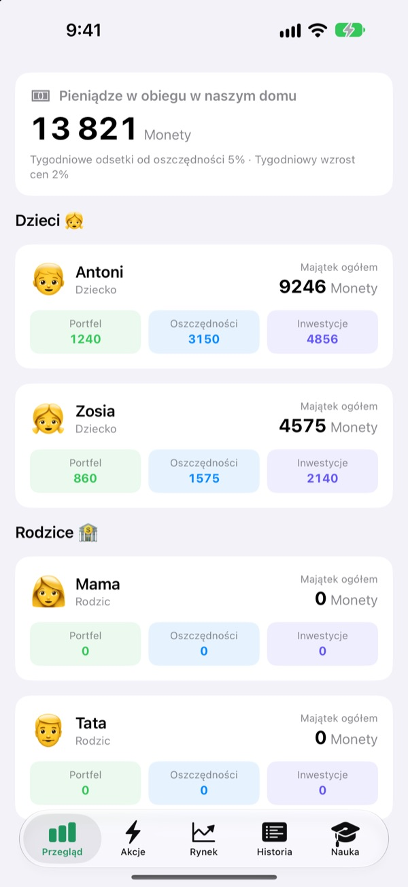
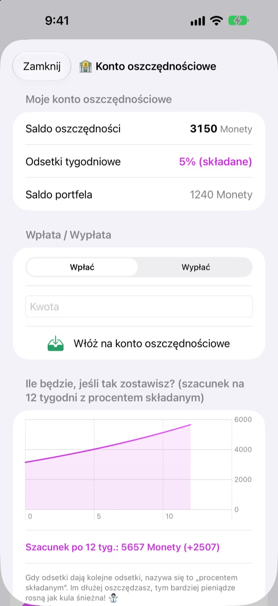
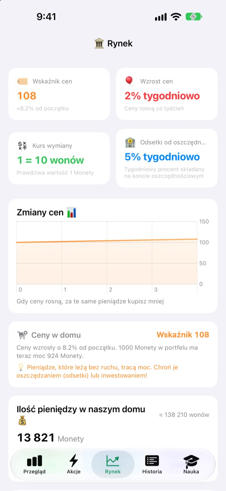
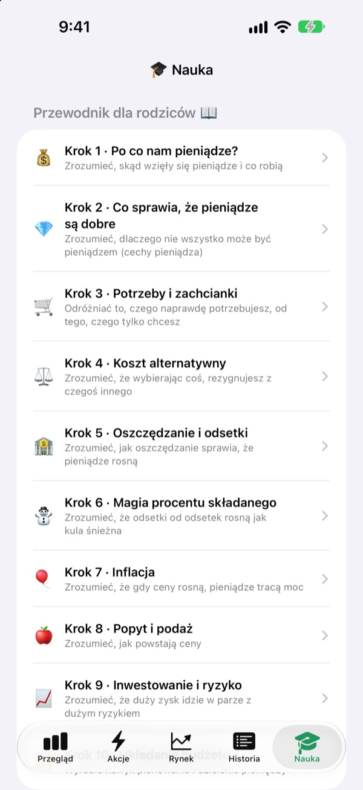

Dzień kieszonkowego
to lekcja o pieniądzach
Ty jesteś bankiem centralnym rodziny, a dzieci klientami. Dostają kieszonkowe w waszej własnej walucie, kupują słodycze, widzą, jak na oszczędności spływają odsetki, i przeżywają wzloty i upadki funduszu treningowego.
Wszystkie funkcje są darmowe. Prawdziwe pieniądze nigdy nie zmieniają właściciela.

Gdzie trzymać 1000 monet?
Te same 1000 monet leży w portfelu, na koncie oszczędnościowym i w trzech funduszach. Przeskakuj o tydzień i patrz, co dzieje się z każdą kwotą. Wszystko według tych samych zasad co w aplikacji.
„Odłóż, to urośnie”. Czy dziecko naprawdę to rozumie?
Odsetki, procent składany, inflacja: im dłużej tłumaczysz, tym bardziej odlegle to brzmi. W SukSuk Kieszonkowe dzieci same zarabiają, wydają i czekają. Gdy odkryją odsetki na oszczędnościach z zeszłego tygodnia, kolejne kieszonkowe trafia prosto na konto oszczędnościowe.
Cierpliwość, którą widać
Pieniądze na koncie oszczędnościowym co tydzień zarabiają procent składany. Oprocentowanie ustalasz ty, a wykres pokazuje, ile będzie za 12 tygodni, jeśli nikt ich nie ruszy.
Kilka dni bez otwierania aplikacji? Przy następnym uruchomieniu wszystkie zaległe tygodnie zostaną wypłacone naraz.

Zobacz, jak ceny zjadają portfel
Karta Rynek zbiera na jednym ekranie rodzinny wskaźnik cen, inflację, oprocentowanie, ilość pieniędzy i ceny funduszy. Gdy ceny rosną, widać, o ile mniej da się kupić za 1000 monet z portfela.
Dzieci widzą w prostych liczbach, że leżące pieniądze tracą wartość, a odłożone lub zainwestowane ją utrzymują.

Dziesięć rozmów na wspólny czas
Przewodnik dla rodziców prowadzi przez dziesięć kroków: po co nam pieniądze, potrzeby i zachcianki, koszt alternatywny, oszczędzanie i odsetki, procent składany, inflacja, inwestowanie i ryzyko, aż po własny budżet.
Kalkulator procentu składanego i kalkulator eksperymentu cenowego pozwalają zmieniać liczby i od razu widzieć efekt.

Trzy kroki na start
- 1
Nazwij walutę
Fasolki, Gwiazdki, Monety: jak tylko rodzina zechce.
- 2
Ustaw PIN rodzica
Cztery cyfry. Tylko ten, kto go zna, może dawać kieszonkowe i zmieniać ustawienia banku.
- 3
Dodaj rodzinę
Dodaj dzieci i rodziców, wypłać pierwsze kieszonkowe i gotowe.
Co gdzie jest
- Przegląd
- Portfele, oszczędności i inwestycje całej rodziny w jednym miejscu
- Akcje
- Daj lub odejmij kieszonkowe, Kod kreskowy artykułu, Dodaj artykuł, Zaproś dziecko, Tryb telefonu dziecka, Ustawienia banku (wymagany PIN rodzica)
- Rynek
- Wskaźnik cen, inflacja, kurs wymiany, oprocentowanie oszczędności, ilość pieniędzy, ceny funduszy
- Historia
- Każdy ruch pieniędzy według daty, osoby lub rodzaju
- Nauka
- Przewodnik dla rodziców w dziesięciu krokach, kalkulator procentu składanego, kalkulator eksperymentu cenowego
- 🐢 Fundusz Żółw Stabilny
- Małe dzienne wahania, powolny i stały wzrost
- 🐰 Akcje Królik Wzrost
- Raz w górę, raz w dół, ale rosną
- 🚀 Akcje Rakieta Przygoda
- Mogą wystrzelić, mogą runąć
Na start: 5% tygodniowych odsetek od oszczędności i 2% tygodniowej inflacji. Oba zmienisz w Trybie rodzica, w Ustawieniach banku. Przy inflacji 0% ceny stoją w miejscu.
Wszystkie funkcje za darmo
Za darmo
- Własna rodzinna waluta i Tryb rodzica chroniony PIN-em
- Dawanie i odejmowanie kieszonkowego, Domowy sklepik i płatności kodem kreskowym
- Konto oszczędnościowe z cotygodniowym procentem składanym
- Trzy fundusze treningowe z wykresami zysków
- Karta Rynek i historia transakcji według daty
- Przewodnik dla rodziców w dziesięciu krokach i dwa kalkulatory
- Tryb telefonu dziecka i synchronizacja przez iCloud
Wesprzyj twórcę
- Wyślij drobny napiwek w dowolnej kwocie z Ustawień banku w Trybie rodzica
- Napiwek niczego nie odblokowuje. Aplikacja działa tak samo
Bez reklam, bez subskrypcji. Przycisk napiwku jest tylko w Trybie rodzica, więc dzieci nigdy nie zobaczą przycisku zakupu.
Pytania
Czy chodzi o prawdziwe pieniądze?
Nie. Waluta i wszystkie transakcje w aplikacji są na niby i służą tylko nauce. Nic nie jest połączone z prawdziwym kontem bankowym, kartą ani gotówką.
Jak widzieć te same konta na telefonie dziecka?
Urządzenia zalogowane na to samo konto iCloud automatycznie synchronizują rodzinne konta. Sprawdź, czy iCloud jest włączony w Ustawienia > Konto Apple > iCloud. Na karcie Akcje, w opcji Zaproś dziecko, możesz utworzyć zaproszenie z kodem QR, które dziecko zeskanuje aparatem. Bez iCloud dane zostają tylko na tym jednym urządzeniu.
Czym jest Tryb telefonu dziecka?
Zmienia telefon dziecka w ekran przeznaczony tylko dla niego. Dziecko widzi wyłącznie swój portfel, inwestycje, historię i lekcje, a do wyjścia potrzebny jest PIN rodzica.
Zapomniałem PIN-u rodzica.
PIN jest zapisany tylko na urządzeniu, więc nawet twórca nie może go odzyskać. Po usunięciu i ponownej instalacji aplikacji można ją skonfigurować od nowa, ale zostaną też usunięte dotychczasowe dane.
Jak działają odsetki od oszczędności?
Co tydzień do salda oszczędności automatycznie dopisywany jest procent składany. Oprocentowanie ustalasz w Trybie rodzica, a minione tygodnie rozliczają się przy następnym otwarciu aplikacji.
Czy ceny funduszy są powiązane z prawdziwym rynkiem?
Nie. To dane treningowe, które zmieniają się w aplikacji raz dziennie. Im bardziej ryzykowny fundusz, tym większe wahania. To nie są prawdziwe produkty finansowe.
Dlaczego ceny rosną?
Żeby dzieci poczuły inflację, rodzinny wskaźnik cen co tydzień trochę rośnie. Tempo zmienisz albo wyłączysz, ustawiając 0%, w Trybie rodzica, w Ustawieniach banku. Jeśli przy okazji podniesiesz trochę ceny słodyczy i zabawek w Domowym sklepiku, lekcja lepiej zapadnie w pamięć.
Jak usunąć wszystko?
Usunięcie aplikacji kasuje dane zapisane na urządzeniu. Dane zsynchronizowane z iCloud usuniesz w Ustawienia > Konto Apple > iCloud > Zarządzaj pamięcią.
Czy dane mojej rodziny są gdzieś wysyłane?
Nie. Nie ma rejestracji, a wszystkie dane zostają na twoim urządzeniu i na twoim własnym koncie iCloud. Twórca dostaje tylko opinie, które sam wyślesz z Trybu rodzica, oraz anonimowe statystyki użycia i raporty o awariach.
Na jakich urządzeniach działa?
Na iPhonie z iOS 17.0 lub nowszym.
Pytania, błędy albo pomysły? Napisz na leeo@kakao.com. Podaj model urządzenia i wersję iOS, a pomożemy szybciej.